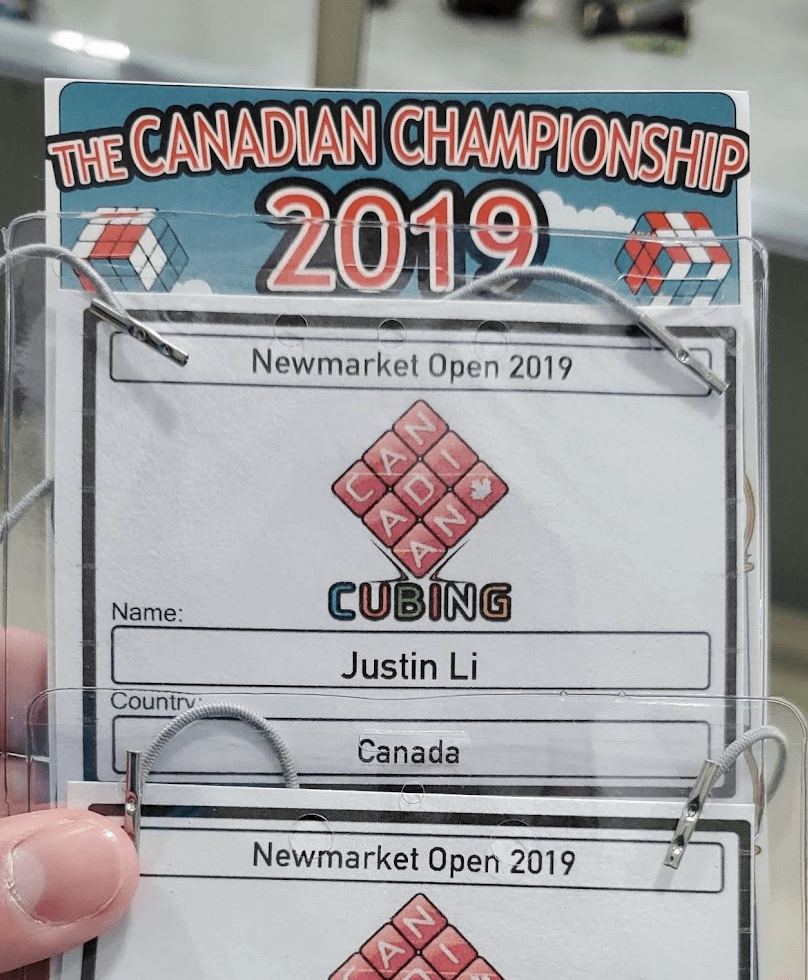

Competitive Rubik's Cubing
Yes, competitive Rubik's cubing is a thing. It is more commonly known as speedcubing and I swear it's more impressive than it sounds.

The first time I solved the Rubik's cube was in grade 5, after watching a tutorial on YouTube. I was instantly hooked. At the time, it probably took around a few minutes to solve because I used a technique called the "Beginner's Method", which only involved memorizing 4 or 5 algorithms in order to solve the cube, but it was very slow. As I began to improve, I learned new ways to solve the cube, one of which was called the "CFOP" method, which is an acronym for "Cross, First 2 layers, Orientation, Permutation", and is also the order in which you solve the cube in. It is a very popular method for speedcubing and involves memorizing over 50 different algorithms. Using this method, I was able to reduce my solving speed to under 20 seconds 🤯.

With this newfound solving method under my belt, I started to compete in official speedcubing competitions around the city. Yes, there are competitions for this and yes, people just sit in a room and solve Rubik's puzzles. I didn't set any world records or anything but the fastest official solve I got was 5.794 seconds.

Since then, I have amassed a huge collection of Rubik's cubes and puzzles and I enjoy pulling them out at random and unsuccessfully trying to remember how to solve them. Most of them will probably remain unsolved until the universe implodes.